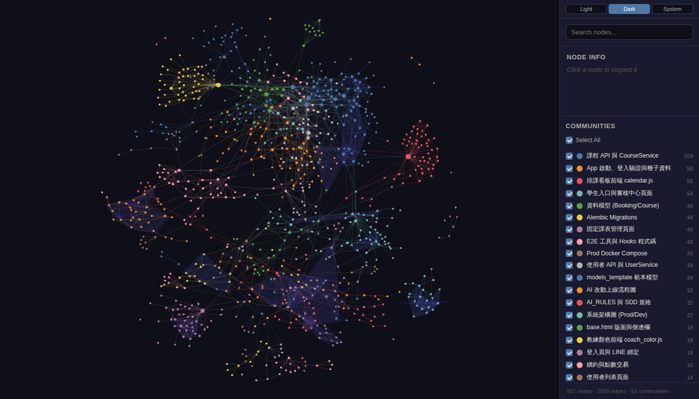

AI 讀書會 · 2026-11-12
把 AI 用在有正式站的專案：KOL Tennis
KOL Tennis 是一個已經上線、每天有人在用的網站。這份文件說明我怎麼讓 AI 幫忙改它，同時不把線上的資料弄壞。
背景 KOL Tennis 是教練每天在用的網球排課網站。它只有一台主機、一個資料庫，裡面是客戶的真實資料。
任務 讓 AI 幫我改這個網站，但不能弄壞線上的資料，也不能要我每次都盯著它做完。
做法 AI 的每個改動要通過四關：動手前先提案、由另一個 AI 檢查、自動檢查程式把關、上線後再看一次。
結果 一次修正從部署到線上確認，我只回了一次「好」、按了一次同意。缺點是規則有時會擋錯，而且每一條都是出過問題才加上去的。
接下來 把這套流程搬到 AWS 上，讓使用者的回饋按難度分開處理：簡單的 AI 直接處理，難的才來問我。
先認識幾個詞
後面會一直用到這幾個詞。
| 正式站 | 使用者實際在用的網站和資料庫。相對的是「本機」，也就是我自己電腦上測試用的網站。 |
| 部署 | 把改好的程式放到正式站上。 |
| AI agent | 能自己讀檔案、下指令、改程式的 AI。這個專案用的是 Claude Code。 |
| commit | 把一批改動存進版本紀錄，之後可以查、也可以退回。 |
| hook | 在固定時機自動執行的檢查程式。AI 沒辦法跳過它。 |
| verifier | 專門負責檢查的另一個 AI agent。它不寫程式，只檢查。 |
| PASS／FAIL | 檢查的結果：通過，或不通過。 |
1背景SITUATION
1.1這個專案
KOL Tennis 是網球課程的排課系統。教練和小編每天用它排課、點名、處理請假和續約。學生用它看自己的課表和剩下的堂數。
網站用 Flask（Python 的網頁框架）和 PostgreSQL（資料庫）寫成，放在一台 AWS 的雲端主機上。
1.2系統長什麼樣子
圖 1 的上半部是正式站。使用者連到 nginx，nginx 再把請求轉給網站程式和資料庫。資料庫每天自動備份一次，每次部署前還會再備份一次。
下半部是我的電腦。AI、hook、檢查用的瀏覽器都在這裡，不會被放到正式站上。
1.3難在哪裡
- 沒有標準答案。網站做得對不對，要實際操作、看畫面才知道。版面跑掉、按鈕沒反應這類問題，程式測試不一定抓得到。
- 沒有中間的測試環境。只有我的電腦和正式站，中間沒有緩衝。
- 資料不能掉。正式站上是教練每天輸入的真實資料，而且跟我電腦上的資料不一樣。
2任務TASK
我想讓 AI 幫我改這個網站，包括查問題、寫程式和部署。但要同時做到三件事：
- AI 說「做完了」，就要真的做完。常見的狀況不是它寫錯，而是它以為自己寫對了。
- 線上的資料不能被動到。做了就收不回來的動作，不能讓 AI 自己決定。
- 不能靠我盯著。我沒辦法每次都看它做完每一步。所以規則不能只是寫給 AI 看，還要有程式自動把關。
3做法ACTION
3.1整個流程
圖 2 是整個流程。綠色的線是主要流程，由左到右是：提出需求、AI 調查後提案、我同意、AI 實作、檢查、commit、部署、上線後再檢查。紅色的兩格是 hook。
流程裡有四關：動手前的確認、獨立的檢查、部署前的詢問、上線後的檢查。3.2 到 3.5 各說明一關。
圖的左下角是另一個入口，也就是使用者的回饋。最右邊是回饋的結案。這兩段在 3.6 說明。
3.2第一關：動手前，先查清楚再提案
AI 要改任何程式或設定之前，都要先過這一關。規則如下：
- 先自己查。AI 先讀程式、在本機重現問題、看資料和修改紀錄。查得到的事不來問我。要看很多檔案時，它會另外派一個 AI agent 去查。
- 一次講完。AI 一次給我完整的提案：原因是什麼、要改哪些檔案、改完怎麼檢查。
- 只問該問的。只有該由我決定的事才問我，例如業務上的規則，或兩種做法各有好壞的時候。每一題都要附上它建議的答案。
- 沒提到的不做。我沒要求的功能、整理程式、「順便」的修改，都不做。AI 想到了可以寫在提案裡，由我決定。
- 我同意才開始。我說「可以」之後才動手。做到一半發現要改變做法，就停下來再問一次。
最早的規則是一次問一題。結果簡單的事也要來回問好幾次，後來才改成現在這樣。因為每一題都附了建議答案，我通常只要回答好或不好。下面是一段實際的對話：
AI 問每次查資料都另外派一個 AI agent，還是比較大的查詢才派？
AI 建議要看好幾個檔案的才派；一兩個指令就查得到的，直接查。
我照建議。
3.3第二關：交付前，檢查的不能是寫的
AI 自己寫、自己檢查，很容易覺得沒問題（實際的例子見 4.2）。所以我把「寫」和「檢查」分給兩個不同的 AI。
負責寫的 AI
- 寫程式，自己先測到會動
- 不能說「完成」
- 不能自己記錄 PASS
- PASS 之前不能 commit
負責檢查的 AI（verifier）
- 只會拿到需求和驗收條件，不會拿到「我覺得好了」這種結論
- 自己看改了什麼，開瀏覽器實際操作，再看截圖
- 電腦版和手機版都看，管理者、教練、學生三種帳號都試
- 不通過就退回。改完之後要換一個新的 verifier 重新檢查
verifier 的設定一開頭就寫著：另一個 AI 改了程式，而且相信它能用。你的工作是查出這是不是真的。你不是站在它那邊的。
PASS 是跟著「改動的內容」走的。檢查通過之後，只要再改任何一個網站的檔案，原本的 PASS 就不算，要重新檢查。
3.4第三關：碰正式站之前，兩道 hook
hook 是自動執行的檢查程式，AI 跳不過去。這一關的原則是：做了就收不回來的動作直接擋掉，其他會動到正式站的動作要先問我。
| 機制 | 什麼時候執行 | 做什麼 | |
|---|---|---|---|
| Stop hook | AI 想結束這次工作時 | 如果有改動還沒檢查過，就擋下來，要它先去檢查 | 擋一次 |
| guard hook | AI 每次下指令之前 | 刪資料表、刪資料庫的儲存空間、清空資料、刪備份 | 一律拒絕 |
| 部署、改資料庫的結構、寫入資料庫、重新啟動網站 | 一定先問我 | ||
| 部署程式 | 部署的第一步 | 先備份資料庫。備份檔是空的或壞的，就停止部署 | 自動 |
「一律拒絕」是指不管 AI 或我怎麼說，hook 都不會放行。真的要做，我得自己下指令。
3.5第四關：上線之後，再看一次但不能改
在本機檢查通過，不代表正式站沒問題，因為兩邊的資料不一樣。所以部署完還要再檢查一次。這一次的規則相反：verifier 只能看，不能改。
- 瀏覽器在我的電腦上執行，透過網址連到正式站。正式站的主機上不安裝任何東西。
- 除了一次登入以外，所有會送出資料的動作都被擋掉。跳出確認視窗時，一律按取消。
- 排課看板只看這一週，不切換到其他週。
- 要寫入資料才能檢查的項目，在報告裡列為「沒有檢查到」，以本機的檢查結果為準。
為什麼連「看」都要限制
在這個網站上，只要有人打開新的一週，系統就會依照固定課表，自動建立那一週的課。也就是說，光是「看」就會寫入資料。所以上線後的檢查只能看已經建立過的這一週。這是出過問題才發現的（見 4.2）。
3.6使用者回饋：從收到到結案
除了我自己提需求，還有第二個入口。小編和教練可以在網站上送出意見回饋。回饋存在正式站的資料庫裡，網站上只能送出，不能查看。
- 讀取。我輸入
/feedback，AI 就去正式站讀出還沒處理的回饋。這一步只讀，不寫入。 - 調查和提案。AI 先把每一筆查清楚，再一次告訴我：這是程式的問題、功能建議、操作上的誤會，還是重複的回饋；原因是什麼；建議怎麼處理。之後走的是同一個流程、同樣的四關。
- 結案。有改程式的回饋，要等部署到正式站之後才能結案，不是在本機改好就算。結案會寫入正式站的資料庫，所以每次都要我同意。做法是先備份，一次只更新一筆，並寫下是怎麼解決的。
回饋是別人輸入的文字。AI 只把它當成「問題的描述」。如果裡面有看起來像指令的句子，AI 不會照做，而且會告訴我。
3.7問題怎麼變成規則
上面這些規則不是一開始就想好的。每次 AI 遇到問題、修好之後，就馬上把它記在一個檔案裡（.claude/lessons-learned.md）。每一條寫三件事：發生了什麼、原因、下次怎麼做。
AI 每次開始工作都會先讀專案的說明檔 CLAUDE.md，而這個說明檔會把上面那個檔案一起帶進來。所以下一次工作時，AI 一開始就知道這些事，不用我提醒。
同一類的問題會更新原本那一條。環境改變之後已經不成立的會刪掉。所以這個檔案不會越來越亂。它由 AI 自己維護，現在有二十多條。
4結果RESULT
4.1一次實際的修正
問題是：兩個人同時打開新的一週時，課程會被重複建立。下面是這個修正從完成到線上確認的過程。
- AI 完成修正。verifier 在本機檢查，結果是 PASS。AI commit。AI＋verifier
- 我問「推到正式站了嗎」。AI 比對我的電腦、程式碼倉庫、正式站三邊的版本，回答還沒有，並說明部署會做哪些事。我：「好」
- 部署：先備份，再重新建立網站，然後確認網站有回應。這次不需要改資料庫的結構。hook 問我一次
- verifier 檢查正式站，只看不改。電腦版和手機版各檢查一次，前後大約兩分鐘。verifier
- 報告：這一週有一百多堂課，重複的 0 組，錯誤 0 個，被擋下的寫入 0 次。PASS
整個過程中，我只回了一次「好」，並在 hook 詢問時按了一次同意。報告裡有三個數字：
自動檢查通過的項目。沒通過的那一項，是 verifier 自己把標準設錯了。它把這件事寫進報告，沒有為了讓結果好看而重跑。
在正式站上寫入資料的次數。
報告裡列出「沒有檢查到」的項目：同時操作的情況、其他週、教練和學生的帳號。
這樣的報告比一句「都通過了」有用，因為它說明了看過什麼、沒看過什麼。
4.2遇過的問題
下面四個問題都實際發生過。前兩個跟 AI 做事的方式有關，也是第一關和第二關存在的原因。後兩個是這個專案和這套規則才有的問題。
改到不該改的地方
我請 AI 修手機版的樣式。它把一整段程式換掉，連夾在中間、跟這次無關的 5 條樣式也刪了。結果一個橫幅蓋住了晚上九點的課。
程式沒有出錯，測試也會通過。第三次檢查時看了截圖才發現。AI 也會「順便」改我沒有要求的東西。
對應的規則：沒提到的不做（第一關）；要換掉一整段之前，先確認會被換掉的內容。
沒做好就說做完了
AI 改完之後，只用指令測了後端的 API，沒有打開畫面看，就回報「完成」。寫的和檢查的是同一個 AI，等於自己檢查自己。
我實際一用就發現問題，退回去請它再改。這樣來來回回了很多次。
對應的規則：由另一個 AI 開瀏覽器實際操作、看畫面，通過了才算完成（第二關）。
光是「看」就會寫入資料
verifier 在本機檢查時切換到新的一週。系統一次建立了一百多筆課程和預約，全部寫進本機的資料庫。
在這之前，我自己也不知道網站會這樣。
對應的規則：檢查時只看已經建立過的週（第四關）。
hook 會擋錯
guard hook 只檢查指令裡有沒有特定的字。它分不出這個指令是真的要對正式站執行，還是剛好提到某個檔名或一段文字。
所以沒有危險的指令有時也會被擋下來。
我決定不放寬。擋錯了只是多下一次指令；漏掉了，資料就救不回來。
5後續規劃
前面寫的都是已經在用的做法。這一章是接下來想做的事，還沒有開始做，細節也可能會改。
5.1現在和之後的差別
現在整套流程都在我的電腦上。要處理回饋，我得先開電腦、啟動本機的網站，再輸入 /feedback。人不在電腦前，就要從遠端連回來操作。之後想把這些都搬到 AWS 上，由 AWS 的服務代管。
| 現在 | 規劃中 | |
|---|---|---|
| AI 在哪裡執行 | 我的電腦 | AWS 上一台專門用來開發的主機。AI 模型用 AWS 的 Bedrock 服務 |
| 誰來啟動 | 我輸入 /feedback | 使用者送出回饋後自動開始 |
| 誰決定怎麼處理 | 每一筆都問我 | 按難度分開，難的才問我 |
| 怎麼找到相關的程式 | 一個檔案一個檔案讀 | 先查知識圖，再讀找到的那幾個檔案 |
| 有問題怎麼通知我 | 我要在電腦前，或從遠端連回來 | AI 透過 agent kit 主動通知我 |
有一條規則不會變：AI 工具不放到正式站上。開發用的主機和正式站是兩台不同的主機，AI 只在開發用的那一台上。
5.2按難度分流
「不用問我」不是所有事都不問，而是看這一筆回饋有多難處理。
| 情況 | 怎麼判斷 | 怎麼處理 | |
|---|---|---|---|
| 已經有答案 | 搜尋過去的問題紀錄和已經結案的回饋，找得到答案（這種做法叫 RAG） | 直接回覆，不改程式 | 不問我 |
| 只是調整樣式 | 只需要改 CSS | 直接處理 | 不問我 |
| 其他 | 要改程式的邏輯、會動到資料，或 AI 自己不確定 | 透過 agent kit 通知我，由我決定 | 問我 |
這跟第三關的原則一樣：出錯了影響不大、可以改回來的，讓 AI 直接做；其他的還是要先問。
5.3用知識圖當地圖
我用 graphify 這個工具，把整個專案整理成一張知識圖。圖裡有程式、文件、已知的問題和網頁，以及它們之間的關係。現在這張圖有 957 個點、2050 條連線，自動分成 52 群。

這張圖可以回答「這件事跟哪些地方有關」。例如有一個已知的問題是「畫面上的文字寫死成『1 堂』」。在圖上可以看到，它同時連到課程的後端、排課看板、學生頁面、共用版面和續約這五群。用關鍵字搜尋，很難一次把這些地方都找出來。
對自動處理回饋來說，這張圖就像地圖。AI 先在圖上找到相關的點，再去讀那幾個檔案，不用每次都把整個專案重新讀一遍。
5.4回饋的前處理
AI 的用量是用 token 計算的，用得越多，費用越高。使用者送出的回饋，不需要每一筆都直接交給最大的模型。先用比較便宜的方式處理一次，可以省下用量：
- 合併重複的回饋。同一個問題被不同人回報好幾次，只處理一次。
- 先分類。分成程式的問題、功能建議、操作上的誤會。分類的結果也決定 5.2 要走哪一條路。
- 先找現成的答案。搜尋過去的問題紀錄和已經結案的回饋。找得到就直接回覆。
- 先縮小範圍。用知識圖找出相關的檔案，只把那幾個檔案交給模型。
實際能省多少還沒有測過，所以這裡不寫數字。
5.5還沒想清楚的事
前面的四關都在說明「為什麼不能讓 AI 自己決定」。這一章卻打算讓一部分的事不用經過我。下面這些問題還沒有答案：
- 回饋是別人輸入的文字。現在有我在中間把關。自動化之後，一段寫得像指令的回饋，會直接送到能改程式的 AI 面前。
- 難度由誰判斷。如果是 AI 自己說「這只是改 CSS」，等於讓它自己決定要不要問我。比較可靠的做法，可能是檢查它實際改了哪些檔案，而不是聽它怎麼說。
- 「直接處理」要做到哪一步。改完、檢查完就自動部署到正式站，還是停在部署之前，等我按一次同意？
- 原本的四關要留下哪些。第二關的檢查和兩道 hook 不需要我在場，應該可以照舊。第一關「動手前先問我」在沒有人的流程裡要怎麼做，還要再想。
- 改壞了怎麼辦。誰會發現？怎麼改回來？要不要通知送出回饋的人？
- 費用。Bedrock 要花多少錢？處理一筆回饋最多可以花多少？
6三個重點
寫的和檢查的要分開。只給檢查的一方需求，不給它結論。
做了就收不回來的動作，用 hook 擋掉。其他會動到正式站的動作，先問人。
要求報告寫出「沒有檢查到什麼」。這比只寫「都通過了」有用。
這三件事跟 AI 模型有多強沒有關係。它們處理的是人和 AI 怎麼分工。
這個專案很小，只有一台主機、一個資料庫。hook 和 verifier 是十月中在一天之內加上去的，原因是我發現自己沒辦法每次都盯著 AI 做完。這些規則是出過問題之後一條一條加的，不是一開始就設計好的。